Operating Documentation
Direction 5133315-3, Rev# 14
Signa EXCITE HD 1.5T Service Methods
Module Version 7.0, Version Date 11/12/09
Operating Documentation |
| Required Persons | Preliminary Reqs | Procedure | Finalization |
|---|---|---|---|
| 1 | Not Applicable | 1 hour | Not Applicable |
This document includes the following procedures:
SCSI Tower Assembly: Replacing an Original SCSI Tower Assembly with a New SCSI Tower Assembly
| Item | Qty | Effectivity | Part# | Manufacturer | |
|---|---|---|---|---|---|
| Standard and Phillips Screwdriver | 1 | - | - | - | |
| Needle-Nosed Pliers | 1 | - | - | - | |
| Item | Qty | Effectivity | Part# | Manufacturer | |
|---|---|---|---|---|---|
| SCSI Tower Assembly with MOD Drive | 1 | - | 2381744 | - | |
| DVD-RW Drive | 1 | - | 5116795-2 | - | |
| Sony MOD Drive | 1 | - | 2318598 | - | |
| SCSI Terminator | 1 | - | 2350404 | - | |
| ||||
| Electric Shock Hazard! | ||||
| Lethal voltages are present inside the Global Operator Console (GOC) Tower. | ||||
| Ensure power is turned off and that the power cord is removed before opening the drive tower. |
Shut down the PC software.
Power down the Global Operator Console (GOC).
Turn off power to the SCSI Tower (see Illustration 1).
Illustration 1: SCSI Tower Assembly Power Switch

Remove the SCSI cable, power cable, and SCSI terminator from the rear of the original SCSI Tower Assembly (see Illustration 2).
Table 1: SCSI Tower Part Numbers
| Part Number | Old Revision | New Revision |
| 5116657 | 7 or earlier | 8 |
| 2381744 | 1 | 2 |
Illustration 2: Old Version of Tower (with External Terminator)

Illustration 3: New Version of Tower (without External Terminator)
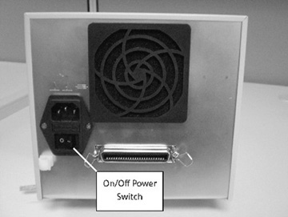
Discard the external terminator.
Remove three screws from the original SCSI Tower cover (as shown in Illustration 4).
Illustration 4: Removing Old Version SCSI Tower Cover Screws
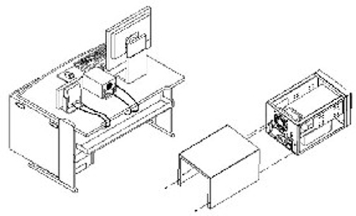
| NOTE: | Steps to remove the MOD drive are similar to those for removing the DVD drive. |
Slide the cover to the rear to remove it. See Illustration 5.
Illustration 5: Removing Old Version SCSI Tower Cover
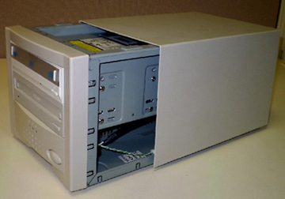
Remove the faceplate by releasing the four tabs while pulling the faceplate away from the unit. See Illustration 6.
Illustration 6: Removing Old Version Faceplate
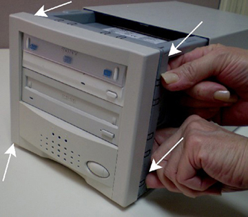
Remove four screws from the drive (two on each side) and slide it out the from of the tower as shown in Illustration 7 and Illustration 8. The DVD drive is on the top and the MOD drive is on the bottom (or secondary) drive.
Illustration 7: Removing DVD Drive from Old Version SCSI Tower

Illustration 8: Slide DVD Drive out of Old Version Tower
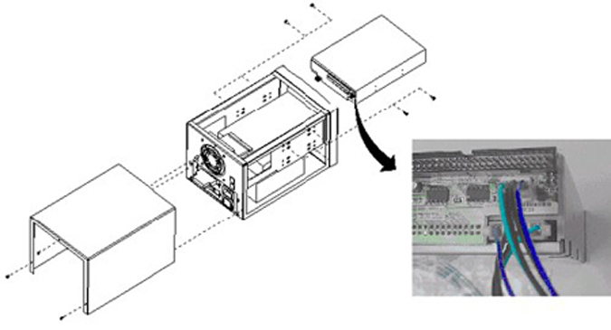
Illustration 9: Drives Removed from Old Version SCSI Tower

(For DVD Drive) Verify jumper positions on DVD as shown in Illustration 10 and Illustration 11, based on the version of the SCSI bridge. In addition, JP2 and JP4 on the bridge should be shorted with a jumper.
Illustration 10: DVD Jumper Positions for Newer Version Tower
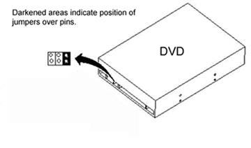
Illustration 11: DVD Jumper Positions on Old and New SCSI Bridge
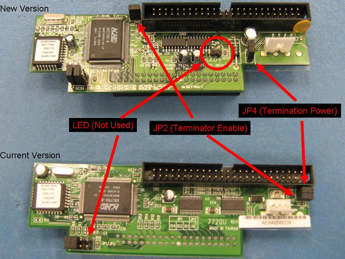
(For Sony MOD Drive) Verify the following settings and jumpers:
All switches in both DIP modules on top of Sony MOD (Model SMO-F551) are in the OFF position.
Illustration 12: DIP Settings on Sony MOD (Newer Version Tower)
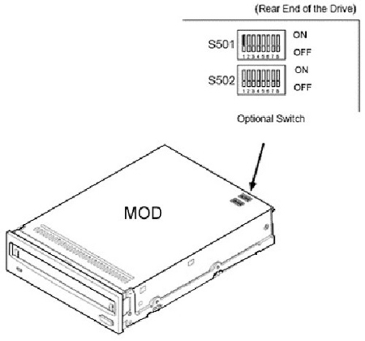
Pins in locations 1, 7, and 9 of the functional switch on the Sony MOD (Model SMO-F551) have shorting jumpers.
| NOTE: | Use a jumper removed from the replaced MOD functional switch to match the jumper settings shown in Illustration 13. |
Illustration 13: Jumper Settings at Rear of MOD Drive
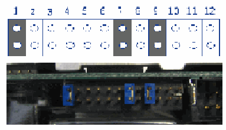
Illustration 14: Jumper Settings at Rear of MOD Drive if No DVD-RW Drive is Present
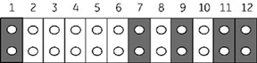
Partially slide the drive into the new tower and connect the power and data cable. Connect power and ribbon cables to drives. Note that a new power/data cable (contained in p/n 5119212) for the DVD drive is provided. This must be utilized and the data portion installed along with the power cord. MOD drive should be the last connector on the ribbon cable.
Reinstall the four drive-mounting screws.
Install the SCSI Tower cover. See Illustration 4.
Reconnect the power cable and SCSI cable.
Power on the GOC.
Apply power to the SCSI Tower Assembly on the back of the unit, as shown in Illustration 3.
Confirm the SCSI Tower Assembly is receiving power by verifying fan rotation.
Confirm the SCSI Data Cable is connected.
Confirm that the other end of the SCSI Data Cable is connected to the PC.
If power was applied to the SCSI Tower too late in the boot process, the software may not have detected it. If this is the case, reboot.
Open a command window.
Run the command scsistat.
The information in Illustration 15 will display. If the information does not display, recheck the power connection, cable connections, and jumper settings, and then re-run the scsistat command.
| NOTE: | If only an MOD is installed, you should see the output related to the MOD. If you have an MOD and a DVD-RW installed, you should see output related to both the MOD and DVD. |
Illustration 15: SCSISTAT Command Reply

Launch MR Service Desktop.
Click [Configure].
Click [FE mode].
Click [Click here to start the tool].
Illustration 16: FE Mode

Login window will open.
Login: Root.
Illustration 17: Login

Password: operator.
From the Utilities heading in the left navigation tree, select [Display MOD/CD-ROM].
Click [Setup Devices].
Illustration 18: Display MOD/CD-ROM

When this procedure is complete, exit the guided install module and go to Finalization, Step 1 (plus remaining steps of the Finalization section).
Shut down the PC software.
Power down the Global Operator Console (GOC).
Turn off power to the SCSI Tower (see Illustration 19).
Illustration 19: SCSI Tower Assembly Power Switch
Remove the SCSI cable, power cable, and external terminator from the rear of the SCSI Tower Assembly (see Illustration 20).
Illustration 20: Original SCSI Tower Assembly
From the SCSI Tower cover, remove three screws (as shown in Illustration 21).
Illustration 21: Removing SCSI Tower Cover
Disconnect power and data connections from the rear of the device.
| NOTE: | Steps to remove the MOD drive are similar to those for removing the DVD Drive. |
Remove four screws from the drive (two on each side) and slide it out the front of the tower as shown in Illustration 22. The DVD drive is on the top and the MOD drive is the on the bottom (or secondary) drive.
Illustration 22: Slide Drive Out of Tower (Example Shows DVD Drive)
(For replacing the MOD drive) Remove one jumper from the functional switch (see Illustration 23) and save it for the replacement MOD.
Illustration 23: Rear View of MOD Drive
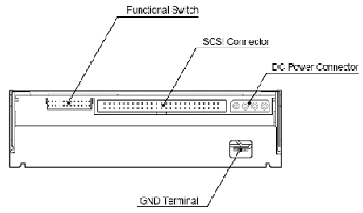
(For replacing the DVD drive) Verify jumper positions on DVD as shown in Illustration 24.
Illustration 24: DVD Jumper Positions for Older Version Tower
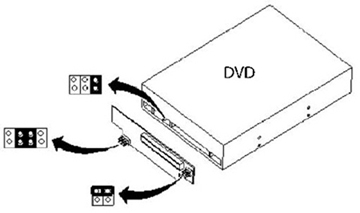
(For Sony MOD Drive) Verify the following settings and jumpers:
All switches in both DIP modules on top of Sony MOD (model SMO-F551) are in OFF position.
Illustration 25: DIP Settings on Sony MOD (Older Version Tower)
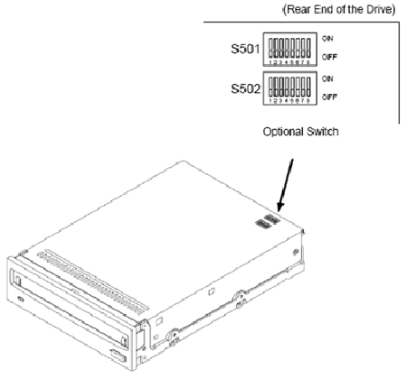
Pins in locations 1, 7, and 9 of the functional switch on the Sony MOD (model SMO-F551) have shorting jumpers.
| NOTE: | Use the jumper removed from the replaced MOD to match the jumper settings shown in Illustration 26. If there is no DVD-RW Drive present, jumpers 11 and 12 should also be ON, as shown in Illustration 27. |
Illustration 26: Jumper Settings at Rear of MOD Drive
Illustration 27: Jumper Settings at Rear of MOD Drive if No DVD-RW Drive is Present
Partially slide the drive into the tower and connect the power and data cable.
Reinstall the four drive-mounting screws.
Install the SCSI Tower Cover and replace the three screws. See Illustration 28.
Illustration 28: Installing SCSI Tower Cover
Reinstall the SCSI cable, power cable, and SCSI terminator to the rear of the SCSI Tower Assembly. See Illustration 29.
Illustration 29: SCSI Cables
Power ON the GOC.
Confirm the green power light on the right front of the SCSI Tower is illuminated. If not, apply power to the SCSI Tower Assembly from the power button on the front of the unit as shown in Illustration 30.
Illustration 30: SCSI Tower Assembly Power Switch
Confirm the SCSI Tower Assembly is receiving power.
Confirm the SCSI data cable and SCSI terminator are connected as shown in Illustration 29 (locations not important).
Confirm that the other end of the SCSI data cable is connected to the PC.
If power was applied to the SCSI Tower too late in the boot process, the software may not have detected it. If this is the case, reboot.
Shut down the PC software.
Power down the Global Operator Console (GOC).
Turn off power at the rear of the SCSI Tower (see Illustration 31).
Remove the SCSI cable and power cable from the rear of the SCSI Tower Assembly (see Illustration 31).
Illustration 31: SCSI Tower Assembly Power Switch and Connections
Remove 4 screws from the bottom of the SCSi tower. See Illustration 32.
Illustration 32: Remove Enclosure Screws
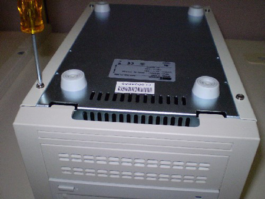
Turn the tower upright and slide the enclosure to the rear to remove. See Illustration 33.
Illustration 33: Remove Enclosure
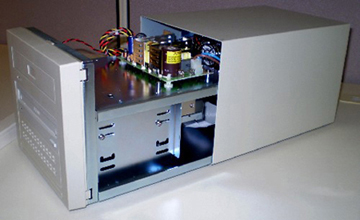
Remove the faceplate using a standard screwdriver to release the 4 tabs while pulling faceplate away from the unit. See Illustration 34.
Illustration 34: Remove Faceplate
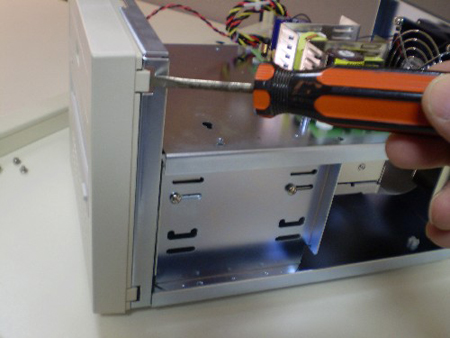
Remove the lower drive cover from the faceplate of the new SCSI tower if you will be installing a DVD-RW drive. See Illustration 35.
Illustration 35: Remove Lower Drive Cover
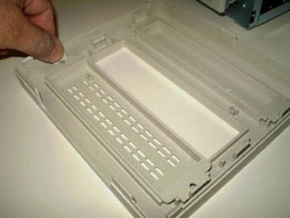
Remove the old MOD and DVD-RW drives.
(For DVD Drive) Verify jumper positions on DVD as shown in Illustration 36 and Illustration 37, based on the version of the SCSI bridge. In addition, JP2 and JP4 on the bridge should be shorted with a jumper. .
Illustration 36: DVD Jumper Positions for Newer Version Tower
Illustration 37: DVD Jumper Positions on Old and New SCSI Bridge
(For Sony MOD Drive) Verify the following settings and jumpers:
All switches in both DIP modules on top of Sony MOD (Model SMO-F551) are in the OFF position.
Pins in locations 1, 7, and 9 of the functional switch on the Sony MOD (Model SMO-F551) have shorting jumpers.
| NOTE: | Use a jumper removed from the replaced MOD functional switch to match the jumper settings shown in Illustration 38. |
Illustration 38: DIP Settings on Sony MOD (Newer Version Tower)
Illustration 39: Jumper Settings at Rear of MOD Drive
Illustration 40: Jumper Settings at Rear of MOD Drive if No DVD-RW Drive is Present
Partially slide the drive into the new tower and connect the power and data cable. Connect power and ribbon cables to drives. Note that a new power/data cable (contained in p/n 5119212) for the DVD drive is provided. This must be utilized and the data portion installed along with the power cord. MOD drive should be the last connector on the ribbon cable. See Illustration 41.
Illustration 41: Connect Power and Cables
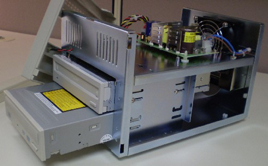
Secure the drives into the drive cage with screws as shown in Illustration 42.
Illustration 42: Secure Drives to Cage
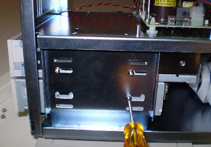
Snap the faceplate back into position.
Slide enclosure over tower and secure with 4 screws. See Illustration 43.
Illustration 43: Secure the Enclosure
Apply power to the SCSI Tower Assembly on the back of the unit.
Confirm the SCSI Tower Assembly is receiving power by verifying fan rotation.
Confirm the SCSI Data Cable is connected.
Confirm that the other end of the SCSI Data Cable is connected to the PC.
If power was applied to the SCSI Tower too late in the boot process, the software may not have detected it. If this is the case, reboot.
| NOTE: | Perform the following procedure for all drives in the tower. For DVD-R/W, write to the DVD drive to make sure it is functional. |
In the left navigation pane, go to Utilities and select SaveRestore.
Click [Save Information & SaveGI]. (This operation is often referred to as performing a “SaveInfo”.)
Insert the media to be used into the drive.
Perform a Verification of SaveInfo Data to ensure information was saved correctly.